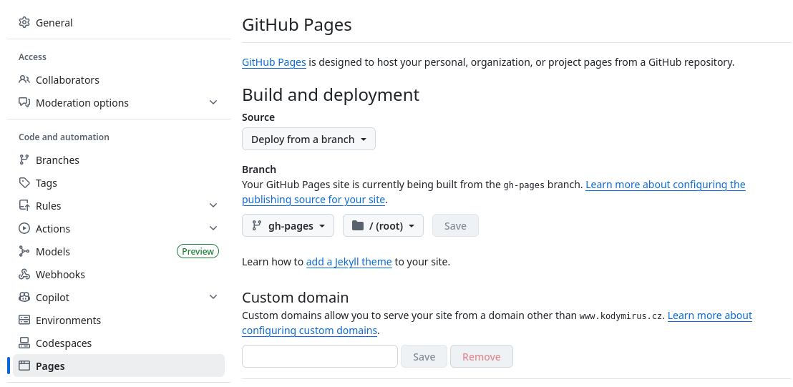

Chapter 6
Github Pages
6.1 Github Actions Interface

After you push changes to the main branch, you can check the Actions tab in your Github repository. It shows the status of the workflow, including whether it ran successfully or if there were any errors.
6.2 Errors

You can also check the logs of the workflow run to see what went wrong. If you encounter an error, it will be displayed in the logs, and you can use that information to debug the issue.
In this case, the filename of the TeX file was incorrect. I had to fix the filename in the GitHub Actions YAML file.
6.3 Setup Github Pages

Once the workflow runs successfully, you can set up GitHub Pages to serve the gh-pages branch.
All output files produced by make4ht will be served on the web. They will be
available at: https://username.github.io/repo/, where username is your GitHub
username and repo is the name of your repository.